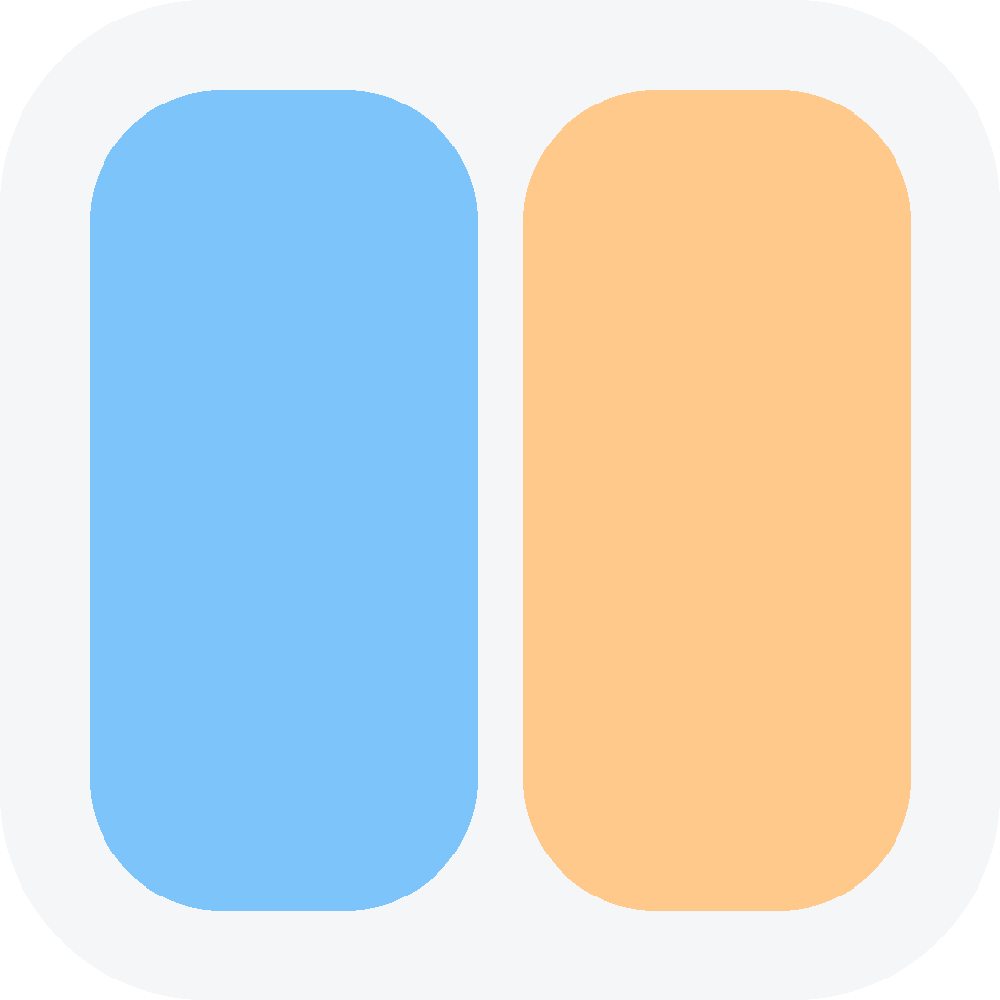
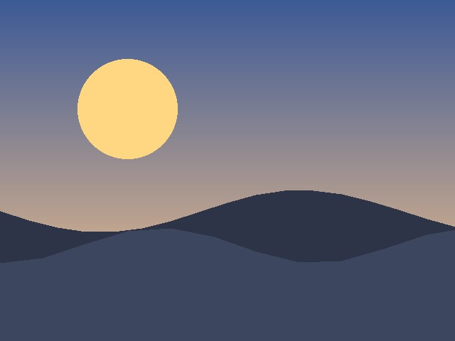
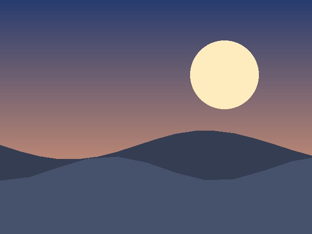
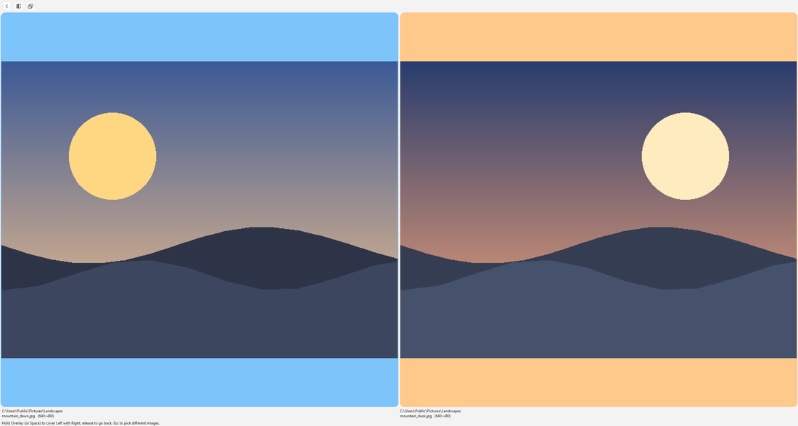

ICMPA small, fast image comparison tool for Windows, macOS, and Linux — side-by-side and hold-to-overlay, no install wizard, no account, unzip and run.


LeftWindows · macOS · Linux — standalone builds, nothing to install.
61d0ceee15d88d4f18310379a04e8f20b597e394cc43614e2af054b4ee660dd6fe27fbbcd274f83682734ddd9f34ef7945fcd50c01f26f1728d0e1b6a971f7542cbec69d4fca42b0d0d4e5c14ac3f3f826c0e547fbdcaced5475354674cb4ccaGetting it running
Unzip, open the icmp folder, double-click icmp.exe. Keep the other files alongside it.
Right-click the app → Open the first time (Gatekeeper blocks unsigned apps opened by double-click).
Enter the icmp folder, chmod +x icmp if needed, then run ./icmp.
Using it
